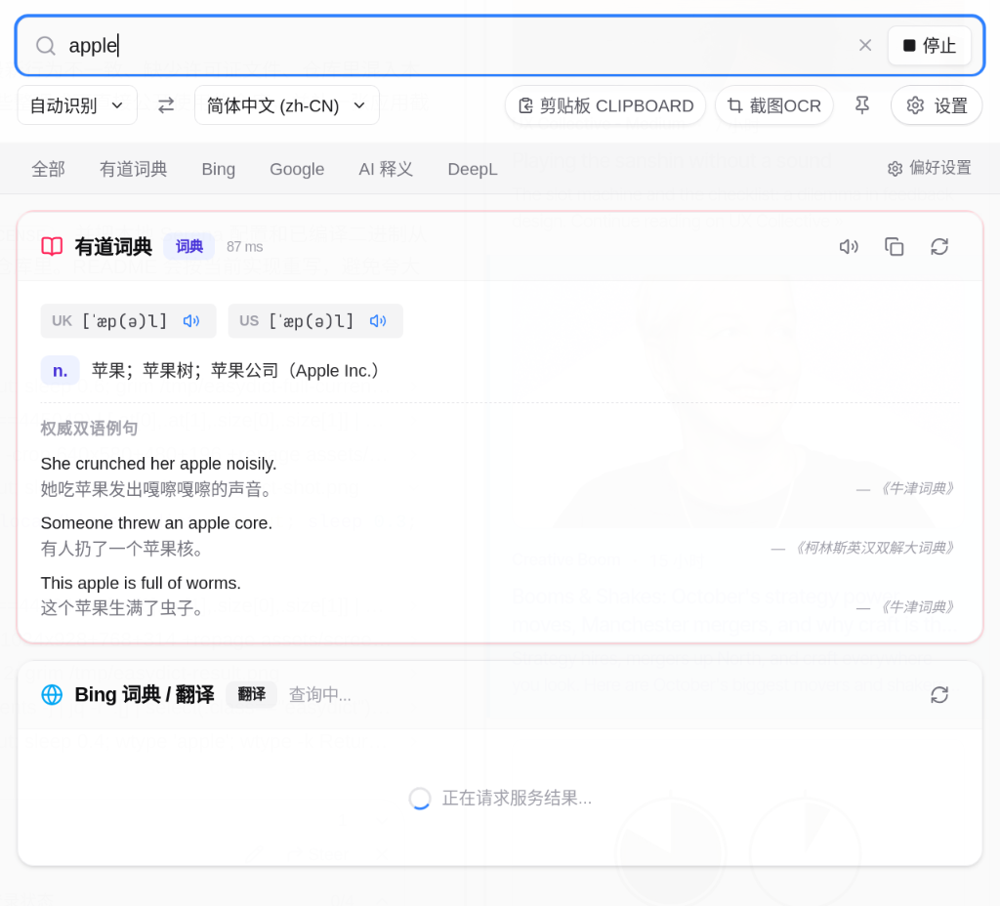

读取 PRIMARY 选区
用鼠标选中就足够，不必先按 Ctrl C。
Easydict for Linux 把词典和翻译放进一个小浮窗。选中单词或句子，按 Alt D，有道、Bing、Google、AI 与 DeepL 同时开始查询——你不用离开正在读的那一页。

读取 Linux 的 PRIMARY 选区——鼠标选中后用中键粘贴的那份内容。它和 Ctrl C 复制到剪贴板的内容互相独立。
浮窗里点「展开」，同一份结果转到主窗口，五个来源完整铺开。
查询中可以停止；某个服务失败或超时，单独重试即可，不必重查全部。
Alt D 划词，Alt A 直接打开输入框。快捷键可以在设置里重新录制。
Yesterday I bought a bag of apples at the market. They were crisp, sweet, and a little tart — the kind you remember from childhood. I left one on the desk before heading out.
n. 苹果；苹果树；苹果公司（Apple Inc.）
权威双语例句
She crunched her apple noisily.
她吃苹果发出嘎嚓嘎嚓的声音。
— 《牛津词典》Someone threw an apple core.
有人扔了一个苹果核。
— 《柯林斯英汉双解大词典》五个服务并发请求，谁先返回谁先显示；词典结果排在翻译前面。
AI 服务支持 OpenAI 兼容接口，可接 DeepSeek、OpenAI 或本地 Ollama；DeepL 使用官方 API Key。
音标、词性、释义与权威双语例句
双解词典与整句翻译
多语言自动识别
结构化释义与译注，兼容 OpenAI 风格接口
官方翻译 API
框选屏幕上的任意区域，OCR 识别后直接翻译。图片、视频字幕、不能复制的界面，都不再是障碍。
框选后进入主窗口，原文与译文对照显示。
识别后直接复制文本，不打断当前窗口。
OCR 首选在线服务；网络不可用时回退到本地 Tesseract（可选安装）。
用鼠标选中就足够，不必先按 Ctrl C。
优先使用 wl-paste --primary --watch；合成器不支持时自动回退到轮询。
保存时检查格式、应用内重复，以及 Hyprland 桌面绑定冲突。
关闭窗口只是隐藏；窗口尺寸会被记住，下次打开还是原样。
浅色、深色或跟随系统，在设置里一键切换。
在主窗口右键，即可翻译选中文本、剪贴板内容，或启动截图 OCR。
快捷键可在设置中重新录制，保存时会检查格式与冲突。
| 功能 | 快捷键 | 命令行参数 |
|---|---|---|
| 输入查词 | AltA | easydict --input |
| 划词翻译 | AltD | easydict --selection |
| 截图翻译 | AltS | easydict --ocr |
| 静默截图 OCR | AltShiftS | easydict --ocr-silent |
需要 Go 1.27+、Node.js 与 pnpm，以及 webkit2gtk-4.1。make install 会把程序装到 ~/.local/bin，并注册桌面入口与图标。
git clone https://github.com/dddaniel1/easy-dict-linux.git
cd easy-dict-linux
pnpm --dir frontend install
make build
make install安装后运行 easydict。开发时可执行 make test，运行 Go 与前端测试。
bind = ALT, A, exec, easydict --input
bind = ALT, D, exec, easydict --selection
bind = ALT, S, exec, easydict --ocr
bind = ALT SHIFT, S, exec, easydict --ocr-silentbindsym Mod1+a exec easydict --input
bindsym Mod1+d exec easydict --selection
bindsym Mod1+s exec easydict --ocr
bindsym Mod1+Shift+s exec easydict --ocr-silent如果窗口管理器已经绑定这些命令，请关闭应用内同名快捷键，避免一次按键触发两次。